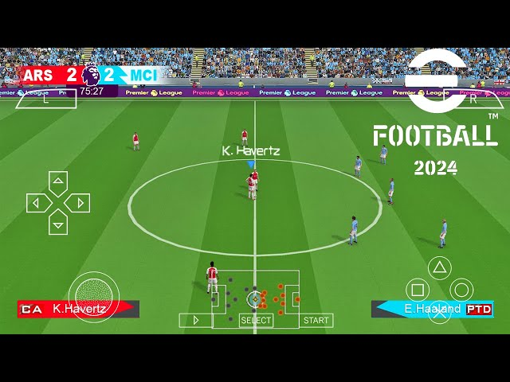

Experience the exceptional smoothness and realism in PES 2024 PPSSPP – PSP Iso. Players' dynamic movements during matches are easily noticeable, adding to the authenticity of the game.
YOU MIGHT LIKE:FIFA 16 MOD 24
In this latest edition, player transfers have received a significant update, ensuring your favorite players are in their respective clubs. The overall graphics quality has been enhanced, delivering stunning visuals that make the game even more beautiful.
PES 2024 allows you to easily access player ratings and customize individual performances, including goalkeeping abilities, dribbling, and shot accuracy, through in-game settings.
Common editions of eFootball PES 2024 PPSSPP, such as TM arts, Jogresss, and Chelito 19 editions, are available for download on this page.

The control buttons in PPSSPP eFootball PES 2024 are smooth and responsive, especially on devices that support multi-touch, enabling you to enjoy precise gameplay.
Discover additional features in PES 2024 PPSSPP offline mode when you set it up. Follow the straightforward steps provided on this download page.
You can also enhance your gaming experience with camera files, including the PS5 camera, which offers a wider view of the pitch, changing the way you see players on the field.
you might like:FIFA 24 MOD 14
Lastly, this year's edition of PES 2024 PPSSPP eFootball Iso boasts a larger selection of stadiums, providing more immersive gameplay.
Download eFootball PES 2024 PPSSPP – PSP Iso Save Data Texture files
Below are the links to get or download the latest editions of eFootball PES 2024 PPSSPP – PSP Iso Save Data Texture files. 
After downloading kindly follow steps to install the game below easily, there’s also images to guide you properly. 
Download Iso And Save Data Textures
How to set PSP 2024 üëá click to watch full video to avoid black screen display

How to set PSP 2024
How To Install PES 2024 PPSSPP – PSP Iso Save Data Textures Files 
Please follow the steps below to extract and configure files for PES 2024 PPSSPP - PSP on your Android device. This process should take approximately 3 minutes.
-
Step One:
Open Installed ZArchiver app and locate downloaded PES 2024 PPSSPP files, then click on it
-
Step Two:
From options menu that comes, click “Extract
-
Step Three:
Promptly tap on the folder name located at the top of the ZArchiver interface.
-
Step Four:
In the dropdown menu that appears, select "Device Storage."
-
Step Five:
Next, tap on the "Extract" icon and choose to replace all files when prompted.
-
Step Six:
Now, patiently wait until the file has been successfully extracted, and the progress reaches 100%.
-
Step Seven:
Upon successful extraction of the PES 2024 PSP file, a PSP folder will be created or replaced and will be visible in your "Device Storage" or "Internal Memory" on your phone. Please make a note of this folder.
-
Step Eight:
Install the latest PPSSPP Gold Apk emulator, then open it. Click on "Browse,".
-
Step Nine:
Scroll down a bit and locate the PSP folder and click on it.
-
Step Ten:
Next, on the following page, select "Use This Folder," and then click "Allow." By doing this, you are granting PPSSPP emulator the necessary permissions to access and load all game files from that folder.
-
Step Eleven:
Now go to PPSSPP Gold settings.
-
Step Twelve:
Navigate to "System," then select "Language," and choose "Espanol (America Latina)." This adjustment will resolve the issue of a black screen when loading PES 2024.